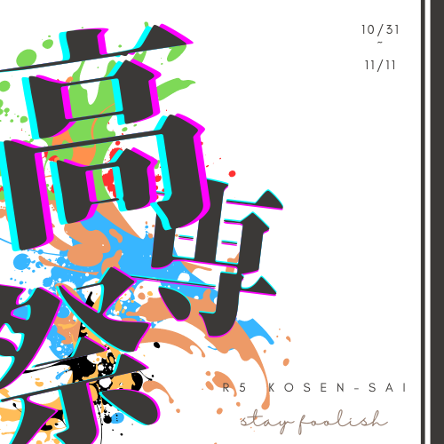

開催にあたって

高専祭とは、高等専門学校の学生が主催する文化祭です。高専祭では、各学科や部活動、サークルなどが展示や実演、模擬店などを行い、高専の魅力を発信します。高専祭は一般の方もご参加いただけますので、ぜひお越しください。
高専祭2023は、7月11日（火）に開催されます。開催時間は午前10時から午後5時までです。専祭の公式ウェブサイトやSNSで随時更新されますので、チェックしてください。
高専祭2023は、高専の学生たちが一丸となって作り上げる一大イベントです。高専の学びや文化に触れることができる貴重な機会です。皆様のご来場を心よりお待ちしております。